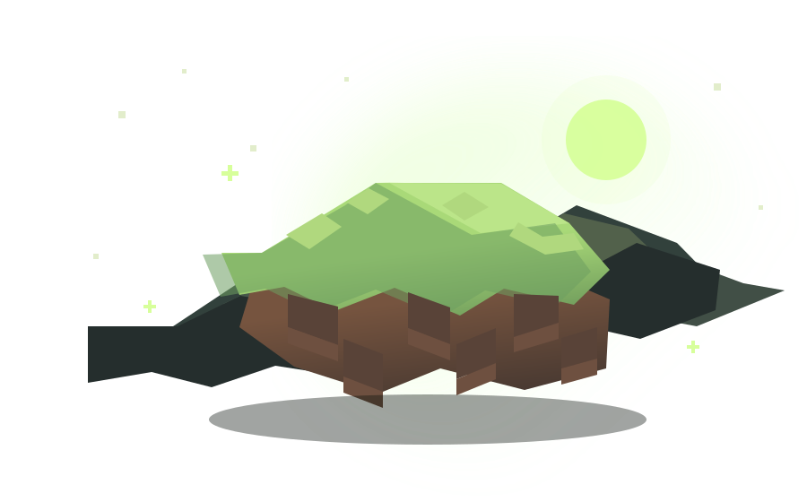

ARCH/Главная
ТВОЯ ИГРА. ТВОИ ПРАВИЛА.
Создавай
свой мир.
Все твои сборки Minecraft — в одном месте.
Настрой, запускай и возвращайся к игре.

ГРАНИЦА НОВОГО МИРА
01 / 03
ТВОЯ КОЛЛЕКЦИЯ
Продолжить игру
Свобода выбораVanilla, Forge, NeoForge, Fabric и Quilt
↗Всё под контролемJava, память и игровые файлы
↗ARCH NOTES 01
Твой следующий мир
уже ждёт.
уже ждёт.
МОЯ БИБЛИОТЕКА
Сборки0
Отдельные миры, версии и модлоадеры — всё собрано здесь.
Тут начинается приключение
Создай первую сборку и выбери свой Minecraft.
ПЕРСОНАЛИЗАЦИЯ
Настройки
Подстрой ArchLauncher под себя.
⌘
Параметры Java
Память и среда выполнения Minecraft.
2 ГБ4 ГБ
Java RuntimeНе установлена
◉
Учётная запись
Активный профиль и подключение аккаунтов.
ArchLauncher
Лаунчер Minecraft Java Edition
ВЕРСИЯ ПРИЛОЖЕНИЯ1.1.0
ДАННЫЕ И СБОРКИФайлы игры и сборок хранятся локально.
✓
Твоя библиотека на этом устройстве
Сборки, настройки и игровые файлы хранятся локально в папке ArchLauncher.